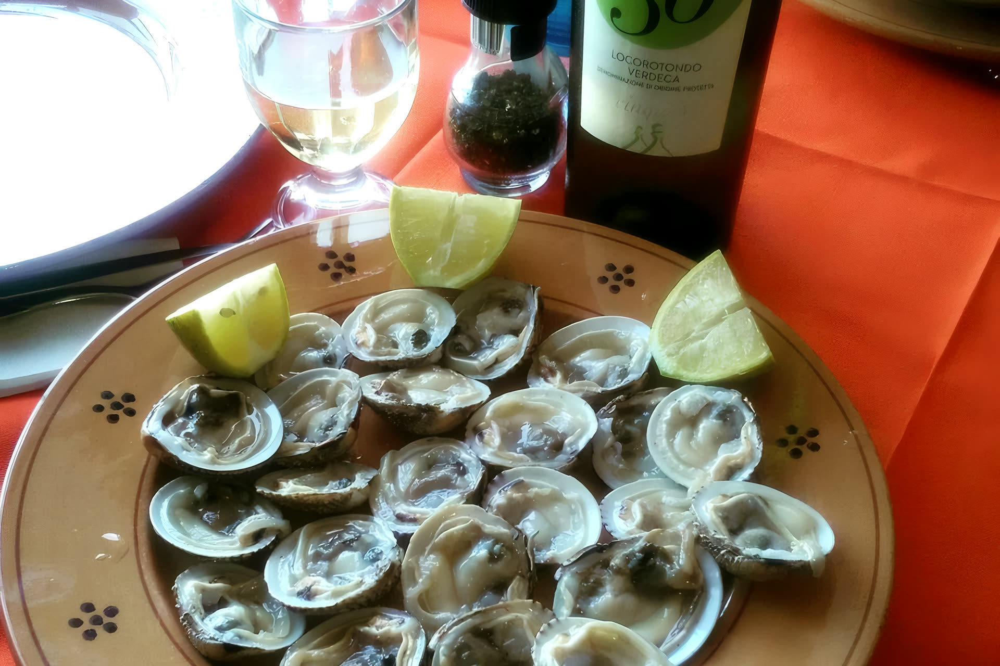
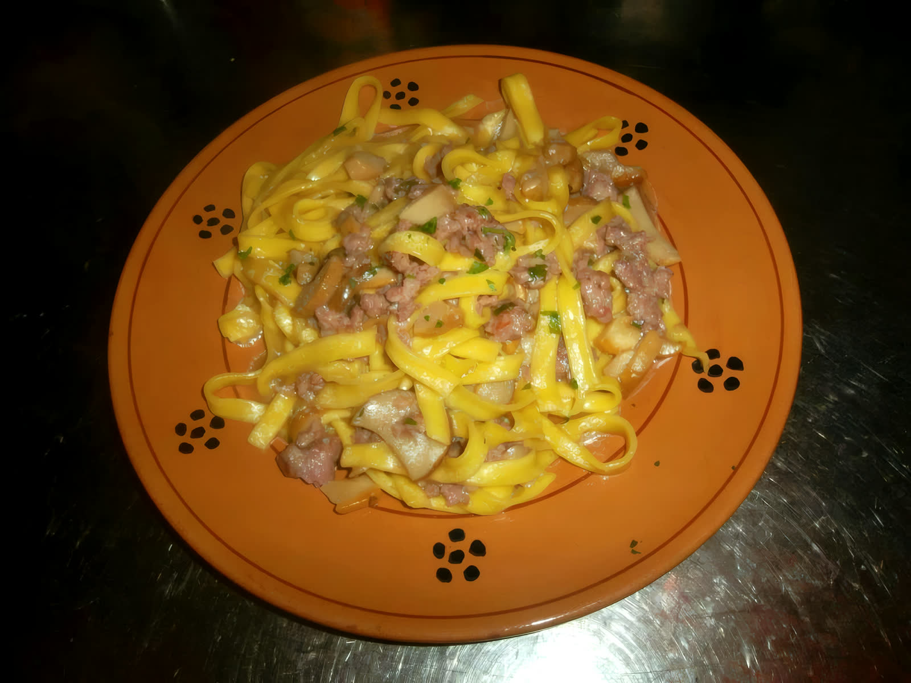
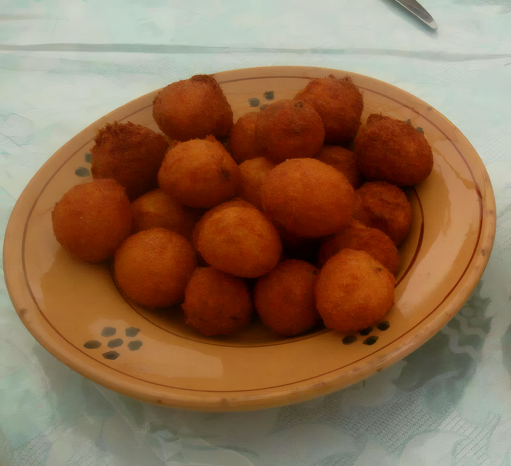
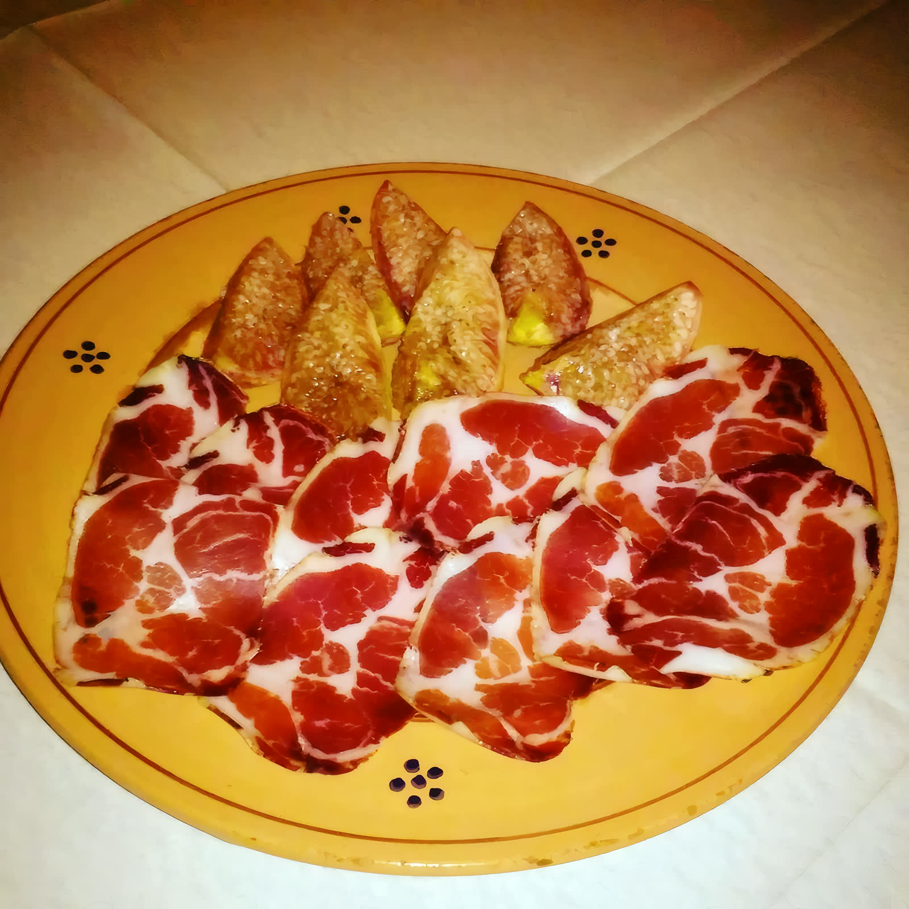
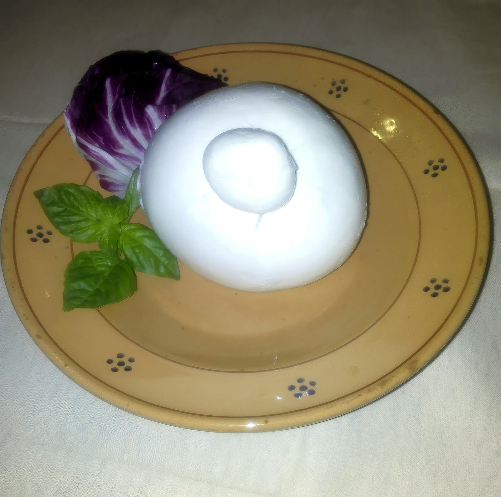
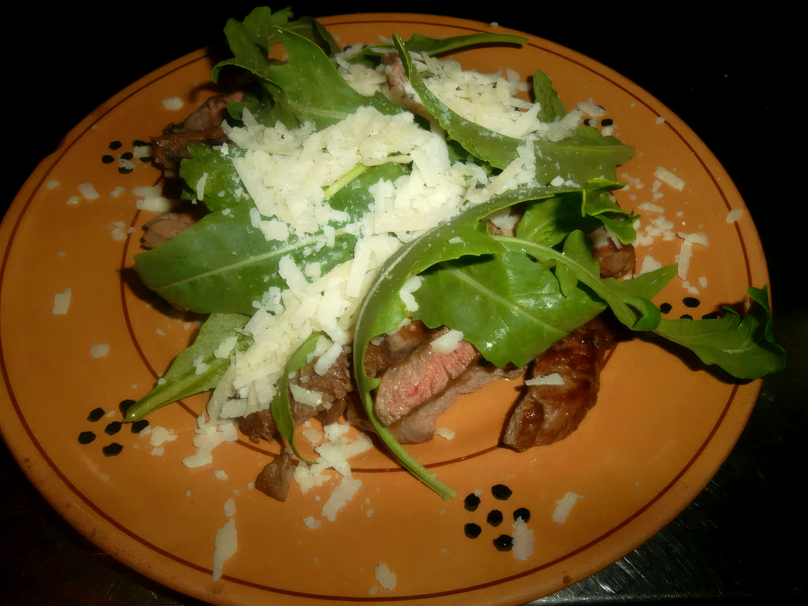
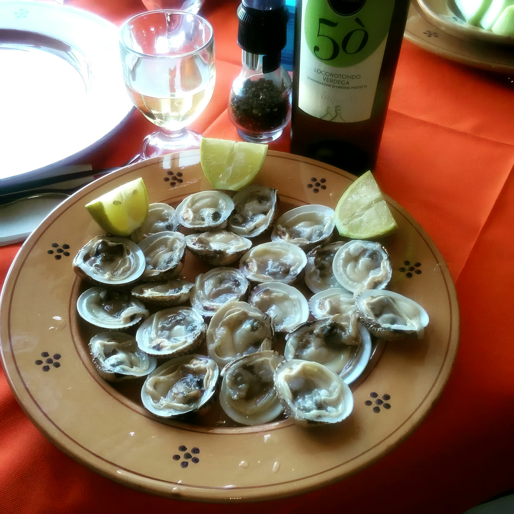
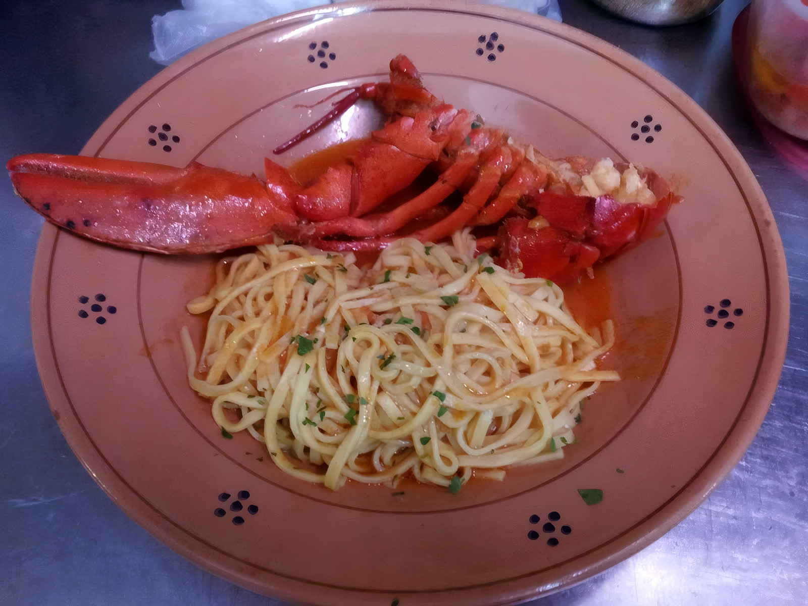

Pizza dal forno a legna
Cotta nel forno a legna sia a pranzo sia a cena. E se la vuoi mangiare a casa, te la prepariamo d'asporto.

Gustoteca Mediterranea · Locorotondo, Valle d'Itria
La cucina pugliese servita sul coccio, con la pizza dal forno a legna, nel centro storico di Locorotondo.
Il nome sta in cucina
Dalla pignatta di pecora in brodo agli involtini di trippa d'agnello, i «gnumereddesuffuchete», fino al purè di fave con le cicorie di campo: la cucina di Lorenzo Zizzi tiene in vita i piatti della Valle d'Itria. E li serve come si deve, sul coccio pugliese dipinto a fiorellini.
La cucina
Lorenzo Zizzi ha imparato il mestiere tra l'Italia e l'estero, poi è tornato a cucinare quello che questa terra sa dare, con uno staff di collaboratori qualificati al suo fianco. Si mangia sia a pranzo sia a cena, e nei mesi estivi apre lo spazio esterno.

Assaggi dalla cucina
La carta segue il mercato e la stagione: i piatti del giorno te li racconta lo staff al tavolo. Questi sono sei assaggi fotografati proprio qui, sul coccio coi fiorellini blu.

Dorati, serviti caldi come antipasto della casa.

Il salume affettato sottile, con gli spicchi di fico fresco.

Bianco latte sul coccio, con una foglia di basilico.

Carne alla griglia, rucola fresca e scaglie di parmigiano.

Aperte al momento, con un bicchiere di Verdeca di Locorotondo.

Il piatto delle occasioni, con l'aragosta intera sul coccio.
In tavola
Cotta nel forno a legna sia a pranzo sia a cena. E se la vuoi mangiare a casa, te la prepariamo d'asporto.
Compleanni, lauree, anniversari: il menu si concorda con lo staff, piatto per piatto, con la carta dei vini a completare la tavola.
Il locale è privo di barriere architettoniche e la cucina prepara piatti gluten free e senza lattosio. Nei mesi estivi si mangia anche fuori.
I servizi
La pizza cuoce nel forno a legna, come da tradizione.
Anche da portare via, pure a pranzo.
Menu concordabile con lo staff per le ricorrenze.
Locale completamente privo di barriere architettoniche.
Tavoli fuori nei mesi estivi.
Materie prime del territorio, con opzioni gluten free e senza lattosio.
La tavola in foto
Ti aspettiamo in centro storico
Siamo aperti sia a pranzo sia a cena. Per i giorni, gli orari e i tavoli chiamaci: al telefono rispondiamo noi.